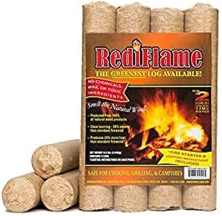
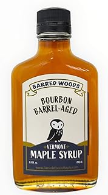
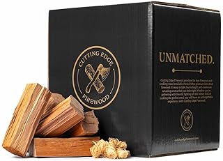
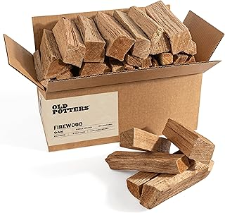
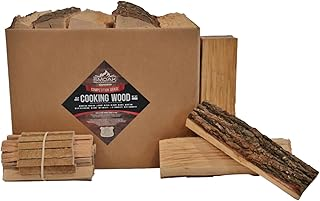

← amishhardwood.com
Amishhardwood: Quality vs Marketing
May 2026
amishhardwood isn't one-size-fits-all. What's perfect for one buyer can miss the mark for another. Here's how to figure out what fits you.





What We Recommend
⭐ 4.5 · $89.99
⭐ 4.3 · $31.99
$129.00
⭐ 4.4 · $9.95
⭐ 3.1 · $34.99
What Separates Good From Great
- Dimensions matter — Read the actual measurements. "Large" means different things to different amishhardwood manufacturers.
- Price trends — amishhardwood prices fluctuate. Track your picks and buy when the price dips.
- Warranty — Real warranty coverage (1+ year) signals a manufacturer that stands behind their product.
What It Comes Down To
2026 has brought quality amishhardwood options at every price point. See our complete guide for current recommendations.
Affiliate Disclosure: As an Amazon Associate, we earn from qualifying purchases. This doesn't affect our recommendations.